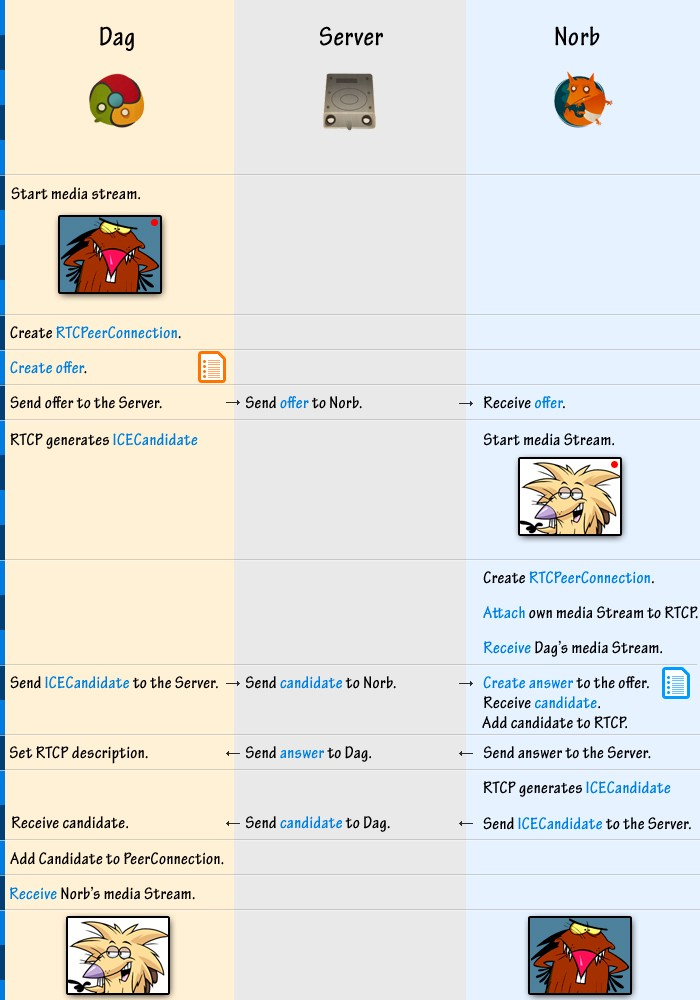
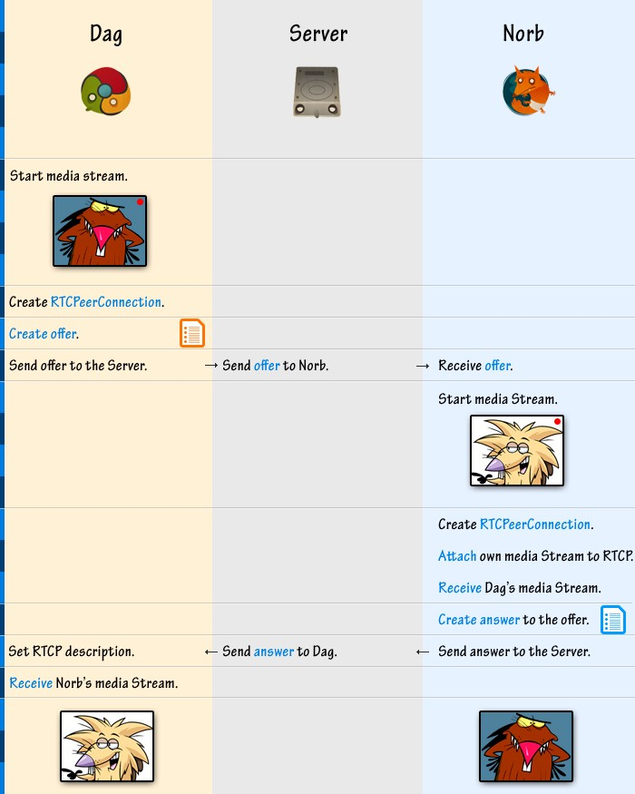

Recently I’ve been working on a small video chat MitChat.com (no longer online) as a way to learn more about latest WebRTC technologies such as PeerConnection (PC) allowing users to send data to other users bypassing the server — basically, P2P in the browser. I’m writing this post to clear some things for myself (mainly to make sure I understand PC correctly) and for those, who want to understand general idea behind PeerConnection before delving deeper.
Let’s start with media streams and how to capture them. Each browser has its own functions to capture camera stream, that’s why it’d be a good idea to use tiny polyfill called adapter.js which allows us to deal with single methods instead of adding multiple browser-specific checks.
Adapter.js gives us several non-browser specific methods and primary one would be getUserMedia().
That function accepts 3 arguments:
** — browser won’t return exact size, only closest available.
*** — this one is only in proposed state as far as i know, so just keep in mind and don’t use it for now.
Set all three arguments to prevent headaches later and it’ll look like that:
// Check if getUserMedia function is available via polyfill.
if (window.getUserMedia) {
// Now, th we are sure we can use it, get our stream.
window.getUserMedia({
video: true,
audio: true
}, function(stream) {
// Do something with the stream here.
}, function(err) {
// Handle error.
console.log(err);
}
);
}Now we’ve got our media stream and preparation stage is over. Let’s send this sucker to the other browser. How does it work? Here’s a flow:
 Browser icons by Nadja Hallfahrt
Ok, how about we remove some of details to show main events that we are interested in:
That was picture stuff. Now let’s go over the code.
Scenario: we have two users named Dag and Norb. Dag is calling Norb.
Previously, we received a stream from our webcam, now it’s time to send it. We start by creating peer connection or pc:
var pc = new RTCPeerConnection({
// iceServers are used to bypass firewalls
// which might block our connection from user to user
iceServers: [
{url: 'stun:stun.l.google.com:19302'}
]
});We need to add event listeners to our peer connection (more on that in the end):
pc.onicecandidate = onAddCandidate;
pc.onaddstream = onAddStream;
// There're some other events, but we'll stick to these for now.Listeners are assigned, now add our stream that we got from getUserMedia:
pc.addStream(stream);We’ve prepared our PeerConnection, time to send an offer asking Norb for chat. createOffer() method accepts three arguments: two callbacks and one object. First callback for successfull creation of an offer, second in case of an error and third argument, an object, contains constrains describing our stream — audio/video.
pc.createOffer(function(offer) {
pc.setLocalDescription(offer, function() {
// We've successfully set description
// and can send offer to Norb.
// via AJAX or WebSocket message.
// Assume that webSocket is an instance of socket.io.
webSocket.emit('message', {
type: 'offer',
offer: offer
});
}, function(err) {
// Failed to set description. Handle error.
});
}, function(err) {
// Handle create offer error.
}, {
mandatory: { // Media constrains.
OfferToReceiveAudio: true,
OfferToReceiveVideo: true
}
});// Set remote description
pc.setRemoteDescription(new RTCSessionDescription(offer));
// Cool, we've set remote description.
// Generate answer. Very similar to offer creation.
pc.createAnswer(function(answer) {
pc.setLocalDescription(answer, function() {
// We've successfully set description
// and can send answer to Dag.
// via AJAX or WebSocket message.
// Assume that webSocket is an instance of socket.io.
webSocket.emit('message', {
type: 'answer',
answer: answer
});
}, function(err) {
// Failed to set description. Handle error.
});
}, function(err) {
// Handle create answer error.
}, {
mandatory: { // Media constrains.
OfferToReceiveAudio: true,
OfferToReceiveVideo: true
}
});When Dag receives Norb’s answer from the server, he sets remote description too:
pc.setRemoteDescription(new RTCSessionDescription(answer));We are almost done. Now all we need to do is deal with ICECandidates. But first let’s talk about what that thing actually is because it’s not exactly clear from the name itself. ICE stands for the Interactive Connectivity Establishment — special kind of a protocol used to establish multimedia sessions. Since ICE is a protocol, Candidates are its addresses — combination of an IP and a port which will be used for data streaming. Usually, there’re multiple such Candidates — for every node in the route connecting two (or more) users. In other words, it’s like a roadmap with multiple roadstops telling browsers how to connecto to each other.
Previously, when we created our first PeerConnection we’ve used following line: “stun:stun.l.google.com:19302". That is a public server provided by Google which allows users to discover all required ICE Candidates even if one or both of the users are sitting behind firewalls (they often prevent creation of all the required Candidates).
Back to working with ICECandidates. Remember, earlier we added a callback to the pc.onicecandidate? Time to work with that callback.
function onAddCandidate(event) {
var candidate = event.candidate;
// As before, we are using websocket connection to
// send data from one user to another.
webSocket.emit('message', {
type: 'candidate',
candidate: candidate
});
}When Dag or Norb will be receiving ice candidates from the server, they’ll need to add them to their PeerConnection:
pc.addIceCandidate(new RTCIceCandidate({
sdpMLineIndex: candidate.sdpMLineIndex,
candidate: candidate.candidate
}));And we are almost done. All we need to do is receive remote stream from the other user (goes both for Dag and Norb):
var videoEl = document.createElement('video');
function onAddStream(event) {
// Since we are using adapter.js we can add stream
// like that:
attachMediaStream(videoEl, stream);
// In webkit browsers it could be done like that:
// videoEl.src = webkitURL.createObjectURL(event.stream);
}That’s all! I hope this post has cleared some of the details regarding WebRTC P2P.
You can try video streaming: